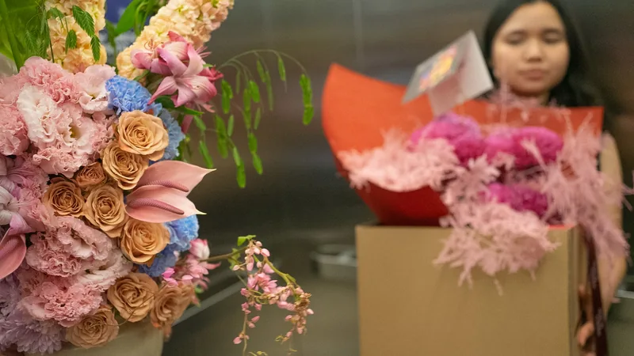
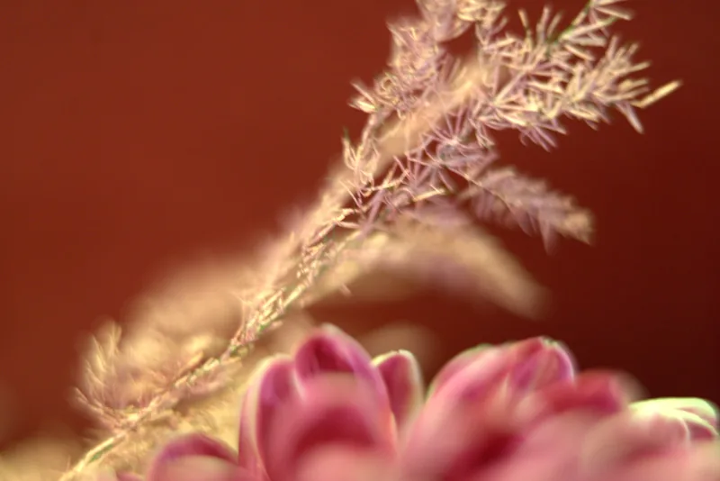
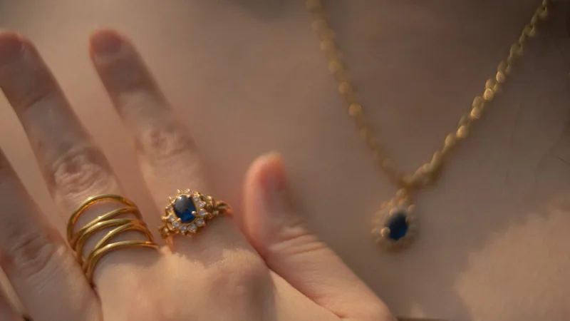
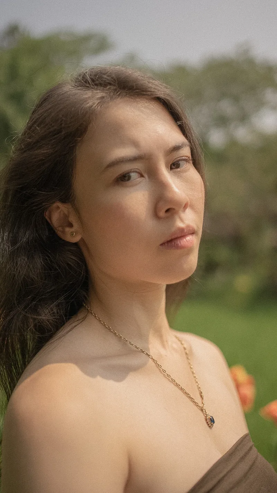

Tutti i servizi
Foto per brand, moda e locali
Per piccoli brand e attività di Padova e Venezia che vogliono immagini curate senza i costi di una grande produzione.
Moda e accessori
Lookbook, foto indossate, dettagli dei prodotti e contenuti per i social.
Food, caffè e ristoranti
Piatti e bevande, l'ambiente del locale e le persone che ci lavorano. Foto per il menu, il sito, la scheda Google e i social.
Prodotti
Foto su sfondo neutro per e-commerce e cataloghi, oppure ambientate.
Collaborazioni: se hai un progetto, anche piccolo o diverso da questi, scrivimi e ne parliamo.
Fiori di Maison Kusuma





Gioielli





Bevande